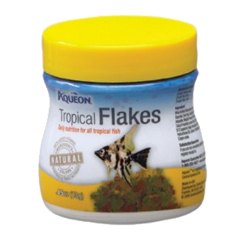

Order Now
Product
Fish
Freshwater fish
-
Guppy
$0.80/fishxGuppy
Guppy also known as millionfish, is a small colourful species of freshwater tropical f\ish. It is one of the most popular types of aquarium tropical fish in the world and generally lives for 2 to 4 years.
Living Environment: Baby guppies should be separated from the older guppies. Guppy should be kept in a tank with other very small fish to prevent them from being eaten.
Diet: It is an omnivorous animal and eats a wide range of organic matter that is available in the water, mainly algae and brine shrimp. It also often eat particles of food from the water that have been left by the larger fishes
Breeding: After mating just once with a male guppy, the female guppy is able to give birth numerous times. Guppy gives birth to live young where the eggs are it is incubated and hatched inside the female guppy. Female guppy can give birth up to 100 baby guppies.
Price: $0.80/fish
-
 Fantail Goldfish
Fantail Goldfish
$1.00/fishxFantail Goldfish
Fantail Goldfish is one of the captive-bred fancy goldfish varieties. It does not grow as large as other types of goldfish, which grows up to 6 inches.
Living Environment: It is best kept in cold water. The tank that it is being kept in should be have open areas with heavily planted areas. It should be kept with a few other goldfishes.
Diet: It is omnivorous and they generally eat all kinds of fresh, frozen and flake food. It is important to adjust the amount of food given at certain temperature at any given time.
Breeding: It should be well fed on a varied diet to get them in spawning condition. The temperature in the tank should be lowered for a period of time to stimulate seasons to get them to breed. Slowly increase the temperature after they have been kept in cold water for a month.
Price: $1.00/fish
-
 Oranda Goldfish
Oranda Goldfish
$1.30/fishxOranda Goldfish
Oranda Goldfish is also known as Tigerhead or Tiger Goldfish. It is one of the egg-shaped variety goldfish. It can grow up to 8 to 12 inches in length.
Living Environment: As it grows, increase the tank size. Proper filtering is needed as they create a lot of waste. The filter should completely clean the water at least 10 times per hour. The tank that it is being kept in should be have open areas with heavily planted areas. It should be kept with a few other goldfishes.
Diet: It is omnivorous and they generally eat all kinds of fresh, frozen and flake food.
Breeding: It is difficult for oranda goldfish to mate outside breeding season. During the breeding season, the head of the male oranda goldfish will become covered with white dots, known as breeding tubercles. Lowering the temperature before gradually raising the temperature can helps trigger spawning.
Price: $1.30/fish
-
 Neon Tetra
Neon Tetra
$0.80/fishxNeon Tetra
Tetra is one of the most well known and popular freshwater tropical fish. Neon tetra is the most commonly bred commercial species of tetra out of all its species.
Living Environment: It is easy to keep as it has the ability to endure difficult conditions. It live in schools of many tetra individuals, sometimes hundred in order to help find food and protect one another. Tetra should be kept with at least 6 to 7 other tetra in tanks.
Diet: It is an omnivorous animal eating a mixture of both plant and animal matter. It primarily feeds on algae, brine shrimp and the larger food particles that are part of the plankton in the water.
Breeding: It breed in pairs that spawn together for about a year.The female tetra lay an average of 130 eggs usually on a leaf in the water which are then fertilised by the male tetra. The eggs are then hatched within a couple of days.
Price: $0.80/fish
Saltwater fish
-
 Clown Fish
Clown Fish
$31.40/fishxClown Fish
Clown fish are found around tropical coral reefs.
Living Environment: It is found either in or around sea anemone which is use as protection and food.
Diet: It is omnivorous and eat a wide range of food such as algae and plankton.
Breeding: The female clown fish lay their eggs on a flat surface close to the sea anemone they inhabit in. Depending on the species, it can lay hundreds or thousands of eggs at one time. It lay its eggs around the same time as the full moon. the male clown fish guards the eggs until it hatch just over a week later.
Price: $31.40/fish
-
 Butterfly Fish
Butterfly Fish
$32.00/fishxButterfly Fish
Butterfly fish is a salt-water species of fish that are found primarily around coral reefs. It is active in the day and resting in the night. An average butterfly fish is fairly small and generally grows up to around 4 to 5 inches in length. It can live up till around 8 to 10 years.
Living Environment: It is difficult to keep as they need specific water conditions that need regular and close monitoring.
Diet: It mostly feeds on coral, sea anemones, plankton in the water, and occasionally snack on small crustaceans.
Breeding: It will form mating pairs that will remain for life. Its eggs are released into the water which form part of the plankton, which is accidentally eaten by animals that live on plankton.
Price: $32.00/fish
-
 Angel Fish
Angel Fish
$70.00/fishxAngel Fish
With their bright colours and deep, laterally compressed bodies, marine angelfishes are some of the more conspicuous residents of the reef.
Living Environment: Most marine angelfishes restrict themselves to the shallows of the reef, seldom venturing deeper than 50 m (160 ft).
Diet: Feeding habits can be strictly defined through genus, with Genicanthus species feeding onzooplanktonand Centropyge preferring filamentous algae.
Breeding: Angelfish reproduce sexually: a male and female engage in brief periods of courtship, which ultimately result in the fertilization of eggs. Angelfish males are quite territorial and defend their territories dutifully, leaving only to mate with females during the spring breeding season.
Price: $70.00/fish
-
 Dory Fish
Dory Fish
$30.00/fishxDory Fish
The Dory Fish which belongs to the tang species, is a small to medium sized fish that is found in the warmer coastal waters of the tropics. Tangs are well know for their bright colours and are closely related to surgeon fish and unicorn fish.
Living Environment: It is found around shallow coral reefs where there is an abundance of food and plenty of places to hide from approaching predators
Diet: Predominantly vegetarian diet. Feed on algae and other plants around the coral reef.
Breeding: Tangs are known to breed all year round in the tropical regions, beginning with a male tang securing himself a temporary breeding territory that includes a pair or group of female tang.
Price: $30.00/fish
Fish Supplies
Fish Food
-

Tropical Flakes
$6.50xTropical Flakes
These flakes are specially formulated for your Tetras, Angelfish, Discus, Barbs, Guppies and other tropical fish. The food contains garlic to boost your fish's immune system. This Aquarium Pharmaceuticals Tropical Flake Food offers wholesome nutrition for your fish. The marigold and carrot blend enhances natural colors in your fish. The food contains garlic to boost your fishes' immune systems.
Price: $6.50
-
 Algae Wafers
Algae Wafers
$11.90xAlgae Wafers
Offers complete and balanced nutrition for superior growth and improved health. Contains higher levels of spirulina and vegetable matter plecostomus and other algae eaters prefer. The uniquely shaped disc won't dissolve readily or cloud water. The "original algae wafer"- Easy and convenient to use. Rich in necessary vitamins and nutrients, including stabilized vitamin C to reduce stress related disease
Price: $11.90
-
Bloodworms
$2.99xBloodworms
Bloodworms Freshwater Fish Food contains natural Red Mosquito Larvae packed with nutrition. Freshwater aquarium fish love the additional variety frozen fish foods add to their diet. Since these Frozen Bloodworms Freshwater Fish Foods have not been heat processed, they retain all their natural vitamins and other essential nutrients.
Price: $2.99
Medications
-
 Hex Shield 125g
Hex Shield 125g
$43.00xHex Shield 125g
Highly palatable medicated food delivers treatment where it is needed most to effectively combat intestinal parasites. New Life Spectrum HEX SHIELD Sinking Pellets treat and prevent a variety of wasting diseases caused by aquarium intestinal parasites. Whole Antarctic krill is the first ingredient to ensure eager consumption of this treatment against flagellates and organisms that cause intestinal disorders such as Hexamita and Spironucleus.
Price: $43.00
-
 Wonder Shell
Wonder Shell
$1.99 - $3.99xWonder Shell
- Aids in Chlorine removal & helps keep aquarium clear.
- - Excellent for use with Goldfish, Livebearers, Cichlids, and more.
- -These mineral blocks can help cure scoliosis in fish such as Guppies or even Bettas when lack of minerals is the cause.
- Each shell oxygenates, aerates and aids in neutralizing harmful acids resulting from normal bio processes. This makes the small Wonder Shell an Excellent Choice for Betta Bowls
- (especially when combined with Pillow Moss, Peat,Indian Almond Leaf Extracts, or Driftwood pieces).
- Comes in small, medium, large
Price: $1.99 - $3.99
-
 API Pro Series: General Cure
API Pro Series: General Cure
$8.99xAPI Pro Series: General Cure
- 10 powder packets for 10 gallons each
- Alternative treatment for Clout, with less fish stress (especially for delicate fish), although not quite as strong
- General Cure Anti-Parasitic Fish Medication treats a wide variety of parasitic diseases
- For Both Freshwater & Saltwater
Price: $8.99
Equipment
Fish Tanks
(Pictures are for illustration only)
-
 Regular Fish Tank
Regular Fish Tank
$680.00xRegular Fish Tank
- 1.5ft x 1.5ft x 1.5ft Tank, 8mm thickness
- Standard overflow box
- Cabinet
- Open top hood
- 2 compartment sump tank
Price: $680.00
-
 Premium Fish Tank
Premium Fish Tank
$349.00 -
 Brandy Glass Fish Bowl
Brandy Glass Fish Bowl
$39.99xBrandy Glass Fish Bowl
- 4mm Glass thickness
- 17.5cm diameter ( across rim), 24cm max dia x 29 cm high (including base)
- Moulded Glass Aquarium ideal for fish
- Can also be used as a decorative vase for table centrepieces filled with floating candles, decorative stones and/or flowers
Price: $39.99
-
 600 Rio Water Pump
600 Rio Water Pump
$18.99x600 Rio Water Pump
- 9.5 Watts
- Flow Rate @ 0 feet Head Pressure; 200 gph/ 760 lph
- Flow Rate @ 2 feet Head Pressure; 120 gph/ 456 lph
- Maximum Head Pressure; 4 ft. 122 cm
- Can be used as a power head with impeller housing screen detached
- Size= 2.5 in x 1.7 in x 2.3 in
- Includes a very durable impeller
Price: $18.99
Decorations
-
 Artificial Water Plant
Artificial Water Plant
$17.99xArtificial Water Plant
- Giant Red/Green Hygrophila
- Plastic, 22 inch long
- Extra Thick Foliage
- Heavy, weighted base
- Remove base to float on top of the water
Price: $17.99
-
 Artificial Corals
Artificial Corals
$3.00xArtificial Corals
- Plastic
- Comes in different colors ( pink, red, green, purple)
- Synthetic
- Suitable for all water type
Price: $3.00
-
 Ceramic Castle House
Ceramic Castle House
$14.99xCeramic Castle House
- A unique 10" long by 7" tall ceramic castle aquarium ornament
- Has a spinning water wheel and an opening roof (air pump required to produce bubbles to spin the power wheel; not included).
- This ceramic ornament makes a great addition to anyone who seeks a unique aquariums
Price: $14.99